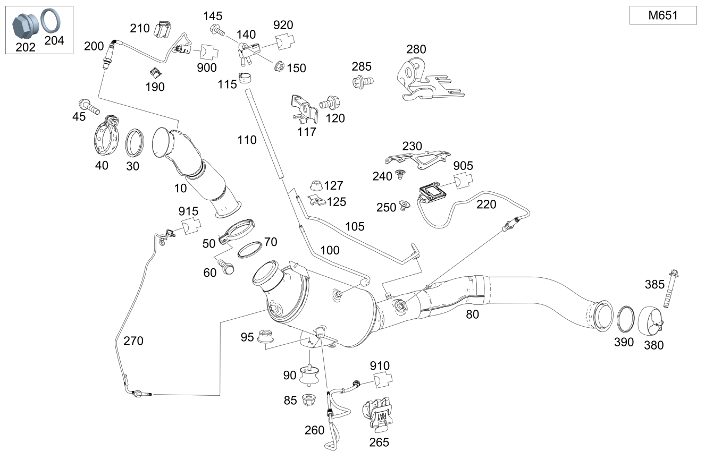

| № | Артикул | Название | Кол. | Примечание | Ограничение |
|---|---|---|---|---|---|
| 10 | A 166 490 04 09 | Модуль впуска ОГ (ABGASEINGANGSMODUL) | 1 | M651 | |
| 30 | A 000 492 00 00 | Упл. кольцо вып. системы (DICHTRING ABGASANLAGE) | 1 | ВПУСКНОЙ МОДУЛЬ ОГ НА ТУРБОКОМПРЕССОРЕ | M651+(807/808/809/800) |
| 30 | A 000 492 09 81 | Уплотнительное кольцо (DICHTRING) | 1 | ВПУСКНОЙ МОДУЛЬ ОГ НА ТУРБОКОМПРЕССОРЕ | M651 |
| 40 | A 000 995 89 02 | Трубн. хомут сист.вып. ОГ (ROHRSCHELLE ABGASANLAGE) | 1 | ВПУСКНОЙ МОДУЛЬ ОГ НА ТУРБОКОМПРЕССОРЕ | M651 |
| 45 | N 910143 008005 | Винт с 6-гр. глвк (SECHSRUNDSCHRAUBE) | 1 | ВПУСКНОЙ МОДУЛЬ ОГ НА ТУРБОКОМПРЕССОРЕ; M8X40 | M651 |
| 45 | N 910143 008006 | Винт с 6-гр. глвк (SECHSRUNDSCHRAUBE) | 1 | ВПУСКНОЙ МОДУЛЬ ОГ НА ТУРБОКОМПРЕССОРЕ; M8X45 | M651 |
| 50 | A 202 490 08 41 | Трубн. хомут сист.вып. ОГ (ROHRSCHELLE ABGASANLAGE) | 1 | Модуль впуска ОГ к катализатору | M642/M651 |
| 60 | N 910143 008005 | Винт с 6-гр. глвк (SECHSRUNDSCHRAUBE) | 1 | Модуль впуска ОГ к катализатору; M8X40 | M642/M651 |
| 60 | N 910143 008006 | Винт с 6-гр. глвк (SECHSRUNDSCHRAUBE) | 1 | Модуль впуска ОГ к катализатору; M8X45 | M642/M651 |
| 70 | A 000 492 08 81 | Уплотнительное кольцо (DICHTRING) | 1 | Модуль впуска ОГ к катализатору | M642/M651 |
| 80 | A 166 490 76 14 | Система катализатора (KATALYSATORANLAGE) | 1 | [697] ДЕТАЛЬ ПОСТАВЛЯЕТСЯ ТОЛЬКО/ИЛИ ТАКЖЕ КАК ЗАП.ЧАСТЬ | M651+926+-13O |
| 80 | A 166 490 91 14 | Система катализатора (KATALYSATORANLAGE) | 1 | M651+926+-13O | |
| 80 | A 166 490 79 14 | Система катализатора (KATALYSATORANLAGE) | 1 | M651+828+-13O | |
| 80 | A 166 490 90 14 | Система катализатора (KATALYSATORANLAGE) | 1 | [697] ДЕТАЛЬ ПОСТАВЛЯЕТСЯ ТОЛЬКО/ИЛИ ТАКЖЕ КАК ЗАП.ЧАСТЬ | M651+828+-13O |
| 80 | A 166 490 74 14 | Основной катализатор (HAUPTKAT.) | 1 | [697] ДЕТАЛЬ ПОСТАВЛЯЕТСЯ ТОЛЬКО/ИЛИ ТАКЖЕ КАК ЗАП.ЧАСТЬ | (M651+U42+(802/803/804+-054))+-13O |
| 80 | A 166 490 65 36 | Основной катализатор (HAUPTKAT.) | 1 | [697] ДЕТАЛЬ ПОСТАВЛЯЕТСЯ ТОЛЬКО/ИЛИ ТАКЖЕ КАК ЗАП.ЧАСТЬ | M651+U42+(804+054+-13O/805+-13O)/M651+U42+927+(804+054+-13O/805+-13O/806/807) |
| 80 | A 166 490 57 36 | Основной катализатор (HAUPTKAT.) | 1 | [697] ДЕТАЛЬ ПОСТАВЛЯЕТСЯ ТОЛЬКО/ИЛИ ТАКЖЕ КАК ЗАП.ЧАСТЬ | M651+(835/927)+U77 |
| 80 | A 166 490 18 56 | Система катализатора (KATALYSATORANLAGE) | 1 | [697] ДЕТАЛЬ ПОСТАВЛЯЕТСЯ ТОЛЬКО/ИЛИ ТАКЖЕ КАК ЗАП.ЧАСТЬ | M651+494+U42+-13O/M651+494+U42+-13O+-805/M651+494+U42+-804+-13O/M651+494+U42+-804+-805/M651+494+U42+-054+-13O/M651+494+U42+-054+-805 |
| 80 | A 166 490 69 36 | Предварит. катализатор (VORKATALYSATORANLAGE) | 1 | [697] ДЕТАЛЬ ПОСТАВЛЯЕТСЯ ТОЛЬКО/ИЛИ ТАКЖЕ КАК ЗАП.ЧАСТЬ | M651+(460/494)+U77 |
| 80 | A 166 490 69 36 | Предварит. катализатор (VORKATALYSATORANLAGE) | 1 | [697] ДЕТАЛЬ ПОСТАВЛЯЕТСЯ ТОЛЬКО/ИЛИ ТАКЖЕ КАК ЗАП.ЧАСТЬ | M651+(460/494)+U77+13O |
| 80 | A 166 490 12 02 | Система катализатора (KATALYSATORANLAGE) | 1 | [697] ДЕТАЛЬ ПОСТАВЛЯЕТСЯ ТОЛЬКО/ИЛИ ТАКЖЕ КАК ЗАП.ЧАСТЬ [402] БОЛЬШЕ НЕ ПОСТАВЛЯЕТСЯ | (M651/M642)+U42+(460/494)+(804+054/805/806)+13O |
| 85 | N 000000 003175 | Гайка (MUTTER) | 1 | К распорке; M8 | M642/M651 |
| 90 | A 166 492 01 95 | Опора (ABSTUETZUNG) | 1 | Сажевый фильтр | M642/M651 |
| 95 | N 000000 003175 | Гайка (MUTTER) | 1 | КРЕПЛЕНИЕ ОПОРЫ; M8 | (M642/M651) |
| 100 | A 166 490 00 39 | Напорный трубопровод (DRUCKLEITUNG) | 1 | Перед сажевым фильтром | M651+494+U42 |
| 100 | A 166 490 00 39 | Напорный трубопровод (DRUCKLEITUNG) | 1 | Перед сажевым фильтром | M651+U42+(804+054/805) |
| 100 | A 166 490 00 39 | Напорный трубопровод (DRUCKLEITUNG) | 1 | Перед сажевым фильтром | M651+U42+927 |
| 100 | A 166 490 00 39 | Напорный трубопровод (DRUCKLEITUNG) | 1 | Перед сажевым фильтром | M651+(460/494)+U77 |
| 100 | A 166 490 00 39 | Напорный трубопровод (DRUCKLEITUNG) | 1 | Перед сажевым фильтром | M651+927+U77 |
| 105 | A 166 490 01 39 | Напорный трубопровод (DRUCKLEITUNG) | 1 | ПОСЛЕ САЖЕВ.ФИЛЬТРА | M651+U42+(802/803/804+-054) |
| 105 | A 166 490 07 39 | Напорный трубопровод (DRUCKLEITUNG) | 1 | После сажевого фильтра | M651+494+U42 |
| 105 | A 166 490 07 39 | Напорный трубопровод (DRUCKLEITUNG) | 1 | После сажевого фильтра | M651+U42+(804+054/805) |
| 105 | A 166 490 07 39 | Напорный трубопровод (DRUCKLEITUNG) | 1 | После сажевого фильтра | M651+U42+927+(804+054/805/806/807/808/809/800) |
| 105 | A 166 490 07 39 | Напорный трубопровод (DRUCKLEITUNG) | 1 | После сажевого фильтра | M651+(460/494)+U77 |
| 105 | A 166 490 07 39 | Напорный трубопровод (DRUCKLEITUNG) | 1 | После сажевого фильтра | M651+927+U77 |
| 110 | A 166 492 02 59 | Шланг выпускной системы (ABGASSCHLAUCH) | 2 | Провода датчика давления сажевого фильтра | M651+494+U42 |
| 110 | A 166 492 02 59 | Шланг выпускной системы (ABGASSCHLAUCH) | 2 | Провода датчика давления сажевого фильтра | M651+U42+927 |
| 110 | A 166 492 02 59 | Шланг выпускной системы (ABGASSCHLAUCH) | 2 | Провода датчика давления сажевого фильтра | M651+(460/494)+U77 |
| 110 | A 166 492 02 59 | Шланг выпускной системы (ABGASSCHLAUCH) | 2 | Провода датчика давления сажевого фильтра | M651+927+U77 |
| 115 | A 005 997 83 90 | хомут (SCHELLE) | 4 | Крепление шланга выпускной системы к трубопроводу дифференциального давления и датчику давления; 13\-14/8.2 MM | M651+494+U42 |
| 115 | A 005 997 83 90 | хомут (SCHELLE) | 4 | Крепление шланга выпускной системы к трубопроводу дифференциального давления и датчику давления; 13\-14/8.2 MM | M651+U42+927 |
| 115 | A 005 997 83 90 | хомут (SCHELLE) | 4 | Крепление шланга выпускной системы к трубопроводу дифференциального давления и датчику давления; 13\-14/8.2 MM | M651+(460/494)+U77 |
| 115 | A 005 997 83 90 | хомут (SCHELLE) | 4 | Крепление шланга выпускной системы к трубопроводу дифференциального давления и датчику давления; 13\-14/8.2 MM | M651+927+U77 |
| 117 | A 166 491 09 41 | Держатель (HALTER) | 1 | Крепление вакуумных трубопроводов | M651+(U42/U77) |
| 120 | N 910143 006000 | Винт с 6-гр. глвк (SECHSRUNDSCHRAUBE) | 1 | Крепление вакуумных трубопроводов; M6X12 | M651+(U42/U77) |
| 125 | A 164 491 02 41 | Держатель (HALTER) | 1 | КРЕПЛЕНИЕ НАПОРНОЙ ТРУБКИ | M651+494+U42 |
| 125 | A 164 491 02 41 | Держатель (HALTER) | 1 | Крепление напорного трубопровода | M651+U42+(804+054/805) |
| 125 | A 164 491 02 41 | Держатель (HALTER) | 1 | Крепление напорного трубопровода | M651+U42+927 |
| 125 | A 164 491 02 41 | Держатель (HALTER) | 1 | Крепление напорного трубопровода | M651+(460/494)+U77 |
| 125 | A 164 491 02 41 | Держатель (HALTER) | 1 | Крепление напорного трубопровода | M651+927+U77 |
| 127 | N 913023 005002 | Гайка (MUTTER) | 1 | Держатель к напорному трубопроводу; M5 | M651+494+U42 |
| 127 | N 913023 005002 | Гайка (MUTTER) | 1 | Держатель к напорному трубопроводу; M5 | M651+U42+(804+054/805) |
| 127 | N 913023 005002 | Гайка (MUTTER) | 1 | Держатель к напорному трубопроводу; M5 | M651+U42+927 |
| 127 | N 913023 005002 | Гайка (MUTTER) | 1 | Держатель к напорному трубопроводу; M5 | M651+(460/494)+U77 |
| 127 | N 913023 005002 | Гайка (MUTTER) | 1 | Держатель к напорному трубопроводу; M5 | M651+927+U77 |
| 140 | A 642 905 02 00 | Датчик давления (DRUCKSENSOR) | 1 | Сажевый фильтр | M651+494+U42 |
| 140 | A 642 905 02 00 | Датчик давления (DRUCKSENSOR) | 1 | Сажевый фильтр | M651+U42+(804+054/805) |
| 140 | A 642 905 02 00 | Датчик давления (DRUCKSENSOR) | 1 | Сажевый фильтр | M651+U42+927 |
| 140 | A 642 905 02 00 | Датчик давления (DRUCKSENSOR) | 1 | Сажевый фильтр | M651+(460/494)+U77 |
| 140 | A 642 905 02 00 | Датчик давления (DRUCKSENSOR) | 1 | Сажевый фильтр | M651+927+U77 |
| 145 | A 094 990 28 10 | Винт с 6-гранной головкой (SECHSKANTSCHRAUBE) | 1 | Крепление датчика к корпусу; M6X30 | (M642/M651)+(U42/U77) |
| 145 | N 910143 006000 | Винт с 6-гр. глвк (SECHSRUNDSCHRAUBE) | 1 | К скобе; M6X12 | M651+(U42/U77) |
| 150 | N 000000 003477 | Гайка (MUTTER) | 1 | Крепление датчика; M6 | (M642/M651)+(U42/U77) |
| 190 | A 000 541 01 40 | Держатель (HALTER) | 1 | КРЕПЛЕНИЕ ПРОВОДА ЗОНДА; 18 X 24 MM | M651+U42 |
| 200 | A 007 542 16 18 | Лямбда-зонд (LAMBDASONDE) | 1 | перед каталитическим нейтрализатором ОГ | M651+-13O |
| 202 | A 094 990 18 08 | Резьбовая пробка (VERSCHLUSSSCHRAUBE) | 1 | Отверстие для датчика кислорода | M651+13O |
| 204 | A 021 997 62 45 | Профильное упл. кольцо (PROFILDICHTRING) | 1 | Отверстие для датчика кислорода | M651+13O |
| 210 | A 000 991 02 71 | Скоба (KLAMMER) | 2 | ЛЯМБДАЗОНД; 18X19 MM | M651 |
| 220 | A 000 905 35 03 | Датчик NOx (NOX-SENSOR) | 1 | перед каталитическим нейтрализатором ОГ 615mm; 615mm | ((M642/M651)+U42)+-(926/828/121/30O/13O) |
| 220 | A 000 905 15 12 | Датчик NOx (NOX-SENSOR) | 1 | перед каталитическим нейтрализатором ОГ 615mm | (((M642/M651)+(U42))+(30O/121))+-(926/928/13O) |
| 220 | A 000 905 57 12 | Датчик NOx (NOX-SENSOR) | 1 | перед каталитическим нейтрализатором ОГ 615mm | M651+(460/494)+13O |
| 220 | A 000 905 26 19 | Датчик NOx (NOX-SENSOR) | 1 | перед каталитическим нейтрализатором ОГ 615mm | (M651+U77+O12)+-(926/828/121/30O/13O) |
| 220 | A 000 905 70 24 | Датчик NOx (NOX-SENSOR) | 1 | перед каталитическим нейтрализатором ОГ 615mm | (M651+U77/M642+U77)+-(926/828/121/30O/13O/O12) |
| 230 | A 166 545 92 40 | Держатель (HALTER) | 1 | Датчик оксидов азота | (M642/M651)+(U42/U77) |
| 240 | A 000 990 36 62 | Пластмассовая гайка (KUNSTSTOFFMUTTER) | 2 | Крепление держателя | (M642/M651)+(U42/U77) |
| 250 | A 000 990 36 62 | Пластмассовая гайка (KUNSTSTOFFMUTTER) | 2 | Крепление датчика оксидов азота | (M642/M651)+(U42/U77) |
| 250 | A 210 990 01 50 | Гайка 6-гранная с пояском (SECHSKANTMUTTER MIT BUND) | 2 | Крепление датчика оксидов азота; 5 MM | M276+920/(M642/M651)+(U42/U77) |
| 250 | A 000 990 36 62 | Пластмассовая гайка (KUNSTSTOFFMUTTER) | 4 | Крепление датчика оксидов азота | M276+920/(M642/M651)+(U42/U77) |
| 250 | A 210 990 01 50 | Гайка 6-гранная с пояском (SECHSKANTMUTTER MIT BUND) | 2 | Крепление датчика оксидов азота; 5 MM [414] СТАРУЮ ДЕТАЛЬ УСТАНАВЛИВАТЬ БОЛЬШЕ НЕ РАЗРЕШАЕТСЯ | M276+920/(M642/M651)+(U42/U77) |
| 260 | A 001 905 18 00 | Датчик температуры (TEMPERATURSENSOR) | 1 | Перед сажевым фильтром | M651 |
| 260 | A 001 905 07 00 | Датчик температуры (TEMPERATURSENSOR) | 1 | Перед сажевым фильтром | M651+(803+053/494/460) |
| 260 | A 001 905 07 00 | Датчик температуры (TEMPERATURSENSOR) | 1 | Перед сажевым фильтром | M651+(494/460/U42/U77) |
| 260 | A 001 905 23 00 | Датчик температуры (TEMPERATURSENSOR) | 1 | Перед сажевым фильтром | M651+421+U77 |
| 260 | A 000 905 71 04 | Датчик температуры (TEMPERATURSENSOR) | 1 | Перед сажевым фильтром | M651+421+U77 |
| 260 | A 001 905 23 00 | Датчик температуры (TEMPERATURSENSOR) | 1 | Перед сажевым фильтром | (M642+M014/M651)+U77+421+174 |
| 260 | A 000 905 71 04 | Датчик температуры (TEMPERATURSENSOR) | 1 | Перед сажевым фильтром | (M642+M014/M651)+U77+421+174 |
| 265 | A 000 546 20 75 | хомут (SCHELLE) | 2 | КРЕПЛЕНИЕ ДАТЧИКА ТЕМПЕРАТУРЫ; 18.0X18.5 MM | M651+-927 |
| 265 | A 012 988 14 78 | Крепежная скоба (BEFESTIGUNGSKLAMMER) | 1 | К экрану | M651+(U42/828/926/927) |
| 265 | A 012 988 14 78 | Крепежная скоба (BEFESTIGUNGSKLAMMER) | 1 | К экрану | M651+(828/926/927) |
| 265 | A 012 988 14 78 | Крепежная скоба (BEFESTIGUNGSKLAMMER) | 1 | НА ЭКРАНИР. ЩИТКЕ | M651+(828/926/927) |
| 270 | A 000 905 03 32 | Датчик температуры (TEMPERATURSENSOR) | 1 | Верхний катализатор [414] СТАРУЮ ДЕТАЛЬ УСТАНАВЛИВАТЬ БОЛЬШЕ НЕ РАЗРЕШАЕТСЯ | M651+(U42/U77/828/926) |
| 270 | A 000 905 09 05 | Датчик температуры (TEMPERATURSENSOR) | 1 | Верхний катализатор | M651+(U42/U77/828/926) |
| 270 | A 001 905 22 00 | Датчик температуры (TEMPERATURSENSOR) | 1 | Сажевый фильтр | (M642+M014/M651)+U77+421+174 |
| 270 | A 000 905 69 04 | Датчик температуры (TEMPERATURSENSOR) | 1 | Сажевый фильтр | (M642+M014/M651)+U77+421+174 |
| 280 | A 166 159 06 40 | Держатель (HALTER) | 1 | К коробке передач спереди | M651+427 |
| 285 | N 910143 006000 | Винт с 6-гр. глвк (SECHSRUNDSCHRAUBE) | 2 | M6X12 [414] СТАРУЮ ДЕТАЛЬ УСТАНАВЛИВАТЬ БОЛЬШЕ НЕ РАЗРЕШАЕТСЯ | M651/M651+427+927 |
| 285 | N 000000 001114 | Винт с 6-гр. глвк (SECHSRUNDSCHRAUBE) | 2 | M6X15 | M651/M651+427+927 |
| 380 | A 000 490 16 41 | Трубн. хомут сист.вып. ОГ (ROHRSCHELLE ABGASANLAGE) | 1 | Катализатор к выпускной трубе сзади; Ø76MM TUBE | Ø85MM BOWL | M651 |
| 380 | A 202 490 08 41 | Трубн. хомут сист.вып. ОГ (ROHRSCHELLE ABGASANLAGE) | 1 | Катализатор к выпускной трубе сзади | (M642/M651)+(U42/U77) |
| 385 | N 910143 008006 | Винт с 6-гр. глвк (SECHSRUNDSCHRAUBE) | 1 | Катализатор к выпускной трубе сзади; M8X45 | (M642/M651)+(U42/U77) |
| 390 | A 000 492 08 81 | Уплотнительное кольцо (DICHTRING) | 1 | Катализатор к выпускной трубе сзади | (M642/M651)+(U42/U77) |
| 400 | A 166 490 60 01 | Система выпуска ОГ (SCHALLDAEMPFERANLAGE) | 1 | (M642/M651)+U42+927 | |
| 400 | A 166 490 55 15 | Система выпуска ОГ (SCHALLDAEMPFERANLAGE) | 1 | (M642/M651)+U42+(498/927) | |
| 400 | A 166 490 98 01 | Система выпуска ОГ (SCHALLDAEMPFERANLAGE) | 1 | M651+(828/926)+(806/807/808/809/800)+-(U42/U77) | |
| 400 | A 166 490 02 01 | Система выпуска ОГ (SCHALLDAEMPFERANLAGE) | 1 | M651+U42+(460/494) | |
| 400 | A 166 490 60 01 | Система выпуска ОГ (SCHALLDAEMPFERANLAGE) | 1 | (M642/M651)+U42+927+829 | |
| 400 | A 166 490 76 01 | Дополнительный глушитель (MITTELSCHALLDAEMPFER) | 1 | M651+(828/926) | |
| 405 | A 166 490 00 33 | Участок осн. глушителя (NACHSCHALLDAEMPFERANLAGE) | 1 | Сзади | (M642/M651)+U42 |
| 405 | A 166 490 08 33 | Участок осн. глушителя (NACHSCHALLDAEMPFERANLAGE) | 1 | Сзади | (M642/M651)+U77 |
| 405 | A 166 490 13 33 | Участок осн. глушителя (NACHSCHALLDAEMPFERANLAGE) | 1 | Сзади | (M642/M651)+U42+-(460/494) |
| 405 | A 166 490 00 16 | Основной глушитель (NACHSCHALLDAEMPFER) | 1 | Сзади | M651+(828/926)+(802/803/804/805) |
| 405 | A 166 490 10 33 | Участок осн. глушителя (NACHSCHALLDAEMPFERANLAGE) | 1 | Сзади | M651+(828/926)+(806/807/808/809/800) |
| 410 | A 002 995 49 02 | Трубн. хомут сист.вып. ОГ (ROHRSCHELLE ABGASANLAGE) | 1 | Катализатор к выпускной трубе сзади; Ø 75 MM | (M642/M651) |
| 410 | A 000 995 48 02 | Трубный хомут (ROHRSCHELLE) | 1 | Катализатор к выпускной трубе сзади; Ø 70 MM | M651+(828/926) |
| 415 | A 166 490 01 56 | Кат. восстановления (SCR-KATALYSATOR) | 1 | (M642/M651)+(835/927) | |
| 415 | A 166 490 18 00 | Катализатор SCR (SCR-KATALYSATOR) | 1 | M651+(460/494)+U77 | |
| 415 | A 166 490 19 00 | Катализатор SCR (SCR-KATALYSATOR) | 1 | M651+(498/835/927)+U77 | |
| 415 | A 166 490 18 00 | Катализатор SCR (SCR-KATALYSATOR) | 1 | (M642/M651)+(460/494)+U77+13O | |
| 415 | A 166 490 15 02 | Система выпуска ОГ (SCHALLDAEMPFERANLAGE) | 1 | [697] ДЕТАЛЬ ПОСТАВЛЯЕТСЯ ТОЛЬКО/ИЛИ ТАКЖЕ КАК ЗАП.ЧАСТЬ [402] БОЛЬШЕ НЕ ПОСТАВЛЯЕТСЯ | M651+(460/494)+13O |
| 420 | A 000 546 20 75 | хомут (SCHELLE) | 3 | Крепление провода датчика; 18.0X18.5 MM | M651+U77+-(494/460)/M642+(927/821/830/922/498)+U77 |
| 420 | A 000 546 20 75 | хомут (SCHELLE) | 1 | Крепление провода датчика; 18.0X18.5 MM | (M642/M651)+U77+(460/494) |
| 420 | A 000 546 20 75 | хомут (SCHELLE) | 4 | Крепление провода датчика; 18.0X18.5 MM | M651+U42+(460/494) |
| 425 | A 168 546 13 43 | Держатель (HALTER) | 1 | (M642/M651)+U77+-(460/494) | |
| 430 | A 000 990 36 62 | Пластмассовая гайка (KUNSTSTOFFMUTTER) | 2 | Крепление датчика оксидов азота | M276+920/(M642/M651)+(U42/U77) |
| 430 | A 210 990 01 50 | Гайка 6-гранная с пояском (SECHSKANTMUTTER MIT BUND) | 2 | Крепление датчика оксидов азота; 5 MM [414] СТАРУЮ ДЕТАЛЬ УСТАНАВЛИВАТЬ БОЛЬШЕ НЕ РАЗРЕШАЕТСЯ | M276+920/(M642/M651)+(U42/U77) |
| 440 | A 000 905 36 03 | Датчик NOx (NOX-SENSOR) | 1 | После катализатора 815mm; 815mm | ((M642/M651)+U42)+-(926/828/121/30O/13O) |
| 440 | A 000 905 16 12 | Датчик NOx (NOX-SENSOR) | 1 | После катализатора 815mm | (((M642/M651)+(U42))+(30O/121))+-(926/928/13O) |
| 440 | A 000 905 27 19 | Датчик NOx (NOX-SENSOR) | 1 | После катализатора 815mm | (M651+U77+O12)+-(926/828/121/30O/13O) |
| 440 | A 000 905 71 24 | Датчик NOx (NOX-SENSOR) | 1 | После катализатора 815mm | (M651+U77/M642+U77)+-(926/828/121/30O/13O/O12) |
| 440 | A 000 905 58 12 | Датчик NOx (NOX-SENSOR) | 1 | После катализатора 815mm | M651+(460/494)+13O |
| 450 | A 166 545 04 47 | Держатель (HALTER) | 1 | Датчик оксидов азота | M276+920/(M642/M651)+U42 |
| 450 | A 166 540 29 40 | Держатель (HALTER) | 1 | Датчик оксидов азота | (M276+920/(M642/M651)+(U42/U77)) |
| 450 | A 166 540 29 40 | Держатель (HALTER) | 1 | Датчик оксидов азота | (M642/M651)+(U42/U77) |
| 460 | A 000 990 36 62 | Пластмассовая гайка (KUNSTSTOFFMUTTER) | 3 | Крепление держателя | M276+920/(M642/M651)+(U42/U77) |
| 460 | A 000 990 36 62 | Пластмассовая гайка (KUNSTSTOFFMUTTER) | 3 | Крепление держателя | (M642/M651)+(U42/U77) |
| 460 | A 210 990 01 50 | Гайка 6-гранная с пояском (SECHSKANTMUTTER MIT BUND) | 3 | Крепление держателя; 5 MM [414] СТАРУЮ ДЕТАЛЬ УСТАНАВЛИВАТЬ БОЛЬШЕ НЕ РАЗРЕШАЕТСЯ | M276+920/(M642/M651)+(U42/U77) |
| 470 | A 008 153 34 28 | Датчик температуры (TEMPERATURSENSOR) | 1 | Верхний катализатор | M642+(U42/U77)/M651+927 |
| 470 | A 000 905 86 04 | Датчик температуры (TEMPERATURSENSOR) | 1 | Верхний катализатор | M642+(U42/U77)/M651+927 |
| 470 | A 000 905 86 04 | Датчик температуры (TEMPERATURSENSOR) | 1 | Верхний катализатор | M642+(U42/U77)/M651+927 |
| 500 | A 000 905 00 60 | Датчик сажевого фильтра (RUSSPARTIKELSENSOR) | 1 | Основной глушитель | (M642/M651)+(U42+-13O/U77)+(460/494)+(803/804/805)+-922 |
| 500 | A 000 905 86 02 | Датчик сажевого фильтра (RUSSPARTIKELSENSOR) | 1 | Основной глушитель [414] СТАРУЮ ДЕТАЛЬ УСТАНАВЛИВАТЬ БОЛЬШЕ НЕ РАЗРЕШАЕТСЯ | M651+U42+(460/494)+(803/804/805)+-(922/13O) |
| 500 | A 000 905 33 04 | Датчик сажевого фильтра (RUSSPARTIKELSENSOR) | 1 | Основной глушитель | M651+U42+(460/494)+(803/804/805)+-(922/13O) |
| 500 | A 000 905 94 01 | Датчик сажевого фильтра (RUSSPARTIKELSENSOR) | 1 | Основной глушитель | (M651+U77+(460/494))+(806/807/808+-058)+-922 |
| 500 | A 000 905 04 08 | Датчик сажевого фильтра (RUSSPARTIKELSENSOR) | 1 | Основной глушитель | (M642/M651)+U77+(460/494)+(808/809/800)+-922 |
| 500 | A 000 905 10 08 | Датчик сажевого фильтра (RUSSPARTIKELSENSOR) | 1 | Основной глушитель | M651+U42+(460/494)+13O |
| 510 | A 166 546 40 43 | Держатель (HALTER) | 1 | Датчик сажи [402] БОЛЬШЕ НЕ ПОСТАВЛЯЕТСЯ | (M642/M651)+(U42/U77)+(460/494)+803 |
| 520 | A 210 990 01 50 | Гайка 6-гранная с пояском (SECHSKANTMUTTER MIT BUND) | 2 | Датчик к держателю; 5 MM | (M642/M651)+(U42/U77)+(460/494) |
| 530 | A 001 995 87 77 | Держатель шланга (LEITUNGSHALTER) | 1 | Провод датчика | (M642/M651)+(U42/U77)+(460/494) |
| 540 | A 000 546 20 75 | хомут (SCHELLE) | 2 | Провод датчика; 18.0X18.5 MM | (M642/M651)+(U42/U77)+(460/494) |
| 690 | A 016 990 09 01 | Винт 6-гр. с шайбой (KOMBI-SECHSKANTSCHRAUBE) | 2 | КРЕПЛЕНИЕ СКОБЫ; M8X18 | M651 |
| 700 | A 166 492 00 44 | Подвесное кольцо (AUFHAENGERING) | 1 | Дополнительный глушитель | M651 |
| 710 | A 166 492 00 43 | Крепежная скоба (BEFESTIGUNGSBUEGEL) | 1 | Дополнительный глушитель | M651 |
| 720 | A 166 492 00 44 | Подвесное кольцо (AUFHAENGERING) | 1 | Основной глушитель слева | M157/M276/M278/(M642/M651)+-(U42/U77) |
| 720 | A 166 492 00 44 | Подвесное кольцо (AUFHAENGERING) | 2 | Основной глушитель слева | (M642/M651)+(U42/U77) |
| 720 | A 166 492 00 44 | Подвесное кольцо (AUFHAENGERING) | 1 | Основной глушитель справа | M157/M276/M278/(M642/M651)+-(U42/U77) |
| 730 | A 166 490 09 37 | Подвес трубопровода ОГ (AUFHAENGUNG ABGASLEITUNG) | 1 | M651+(U42/U77) | |
| 740 | N 910112 008000 | Шестигранная гайка (SECHSKANTMUTTER) | 2 | Консоль к поперечине; M8 | M276/M278/(M642/M651)+-(U42/U77) |
| 740 | N 000000 003175 | Гайка (MUTTER) | 1 | Крепление основного глушителя; M8 | (M642/M651)+(U42/U77) |
| 900 | A 022 545 29 26 | Картер сцепления (KUPPLUNGSGEHAEUSE) | 1 | Датчик оксидов азота после катализатора N37/8; 5 PIN MLK 1.2 | |
| 900 | A 000 545 36 43 | Корпус штекерной втулки (STECKHUELSENGEHAEUSE) | 1 | Лямбда\-зонд B85*1; 6 PIN MLK 1.2 | |
| 900 | A 022 545 27 26 | Картер сцепления (KUPPLUNGSGEHAEUSE) | 1 | САЖЕВЫЙ ФИЛЬТР N74/1; 4\-PIN MLK1.2 | |
| 905 | A 022 545 29 26 | Картер сцепления (KUPPLUNGSGEHAEUSE) | 1 | Датчик оксидов азота перед катализатором N37/7; 5 PIN MLK 1.2 | |
| 910 | A 022 545 27 26 | Картер сцепления (KUPPLUNGSGEHAEUSE) | 1 | Датчик сажи N74; 4\-PIN MLK1.2 | |
| 910 | A 051 545 14 28 | Корпус (GEHAEUSE) | 1 | Датчик температуры к сажевому фильтру; 2\-PIN MLK | |
| 915 | A 051 545 14 28 | Корпус (GEHAEUSE) | 1 | Датчик температуры перед сажевым фильтром B16/22; 2\-PIN MLK | |
| 920 | A 027 545 09 26 | Картер сцепления (KUPPL.GEHAEUSE) | 1 | Дифференциальный датчик давления сажевого фильтра B28/17; 3\-PIN SLK2.8 | M651 |
Позиций: 166 · подписано на схемах: 166 · колесо — плавный зум в курсор, перетаскивание — пан, двойной клик — зум, клик по артикулу — скопировать.